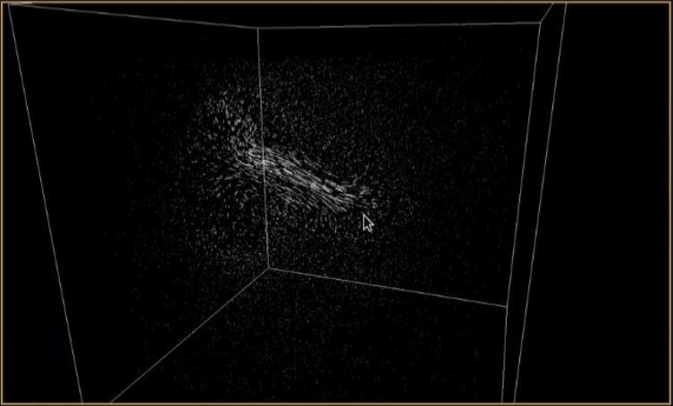
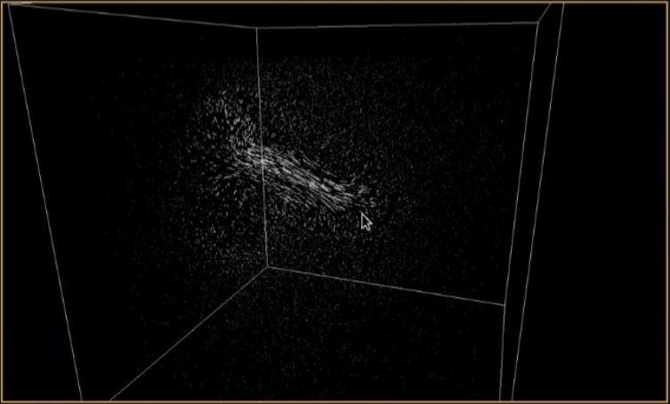

About
ChatImproVR is a virtual world platform: a game engine and a set of tools used to create and experience an immersive virtual space, inside and out of VR. These virtual spaces can be hosted online, where other users can join them to socialize and enjoy a variety of activities in the virtual world.
ChatImproVR improves on existing virtual world platforms by promoting open source software and prioritizing user control over content. With ChatImproVR, the possibilities are endless!
ChatImproVR is programmed in Rust.
Join Us
We are always looking for people to join the ChatImproVR community! If you want to contribute to engine development, or even just want to use ChatImproVR with your own projects, join our community on GitHub today!
For those interested in game development, download the engine and get started with one of our plugin tutorials.